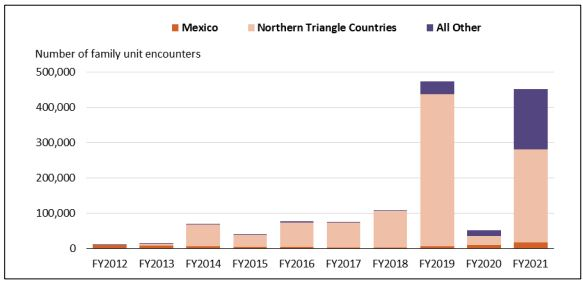

Reading the CRS Report - Immigration: Apprehensions and Expulsions at the Southwest Border December 22, 2021, demonstrates the strength of this service. The report highlights much great information about this complex area of policy and human events, by visualizing data and marshalling relevant policy actions to bring clear and accurate insight to the reader.
In 2nd paragraph of the Summary Page, CRS zooms in onthe increase in migration from the Northern Triangle Countries (El Salvador, Guatamala, and Hondorus)
This is re-highlighted in the Introduction, but this time with footnote 6, which contains a summary of Secretary Mayorkas Statement from March 15, 2021.
Then in Figure 4 We can see the huge jump in Single Adult encounters (highlighted in a shade of Cashmere (pink peach-ish)) and in Figure 5 in Family units in the same color (note the similar jump in 2019 and relative dominance of Northern Triangle families previously), and again tragically in Figure 6 for unaccompanied children with same highligh color and same bar chart cover.
|
Figure 4. Single Adult Encounters at the Southwest Border, by Origin Country, FY2012-FY2021
|
|  |
|
Figure 5. Family Unit Encounters at the Southwest Border, by Origin Country, FY2012-FY2021
|
|
Figure 6. Unaccompanied Children Encounters at the Southwest Border, by Origin Country, FY2012-FY2021
|
This data really tells the reader something is very wrong in the Northern Triangle areas, bringing this to Secretary Mayorkas attention almost immediately after assuming office.
What has the Biden Administration done about this? Mayaorkas likely brough this to the attention of the cabinent, where by the Vice President took point to dramatically improce the situation on the ground for folks in Northern Triangle Coiuntries.
By May the Vice President made a Call to Action across both the public and private sector focusing on these key actions:
The Vice-President working with the State Department developed a new Public Private Non-Profit Partnership Organization, Partnership For Central America to coordinate organizations and people. Which lead to a $1.2B commitment by December of 2021, the same month as the report- increasing in size to by $1.9B to $3.2B, six months later, bringing jobs, commerce and other permanent growth improvements to the region.
But what about the violence and corruption endemic to the Northern Triangle area? DoJ moved slower and more powerfully, announcing a new task force in October of 2021. Which has delevered many arrests and prosecutions over the same time period. Most recently crippling the leadership of El Salvador's notorius MS-13.
And what of the measurable effects of this work? We can see via the followup fact sheet for FY2022 in figure 4- despite dramatic increases in historically Atypical Countries of origin for Migrants, the Northern Triangle Migrant numbers are already falling.
Good information presented well helps the public dive into and understand even very specific aspects of very complicated problems.